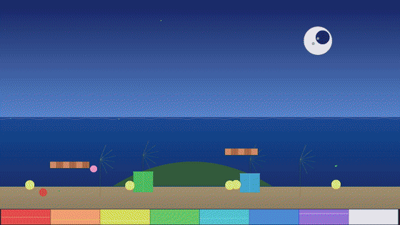

What is in it
- One list — colour bars crossfading to a test card with one TAKE.
- Databend — the picture read out as a signal and played through an audio chain. You can try that one in your browser.
- Chladni plates — the picture gathering along a vibrating plate's lines, one of 39 video effects.
- Time cube — the last few seconds kept as a block you can turn.
- Projection mapping — a layer's corners pinned onto a tilted surface, live, and carried into the recording.


Nobody touched the mouse
Every shot was driven down the same TCP control port a Stream Deck or a Bitfocus
Companion button would use — TAKE, FX ADD databend,
VIDEO OUTPUT LAYERWARP — and recorded by Deckboy's own programme
recorder from the released 0.99.377 build. The mapping shot is a stream of corner
positions sent a few times a second, the way a controller would drag them.
Nothing is a mock-up and nothing is anybody's media: every picture is generated by Deckboy itself. The titles and captions were added afterwards, and the music is an original chiptune written for this trailer, with its last note landing on the end card.
The first trailer
The 0.99.374 trailer shows Deckboy's control window at work — transitions, a window cue, a web page cue, slides with presenter view — and its music is Deckboy playing itself: the 2A03 chip voice, a Tone cue fired down the control port and run through the application's own audio rack.
Feature clips
Short ones, one feature each, recorded from the released application and cut with captions that name what is on screen. Each comes in a vertical version for phones.
Time cube
17 seconds · new in 0.99.377 · vertical version
Reuse it
The trailer, the music and the GIFs on this page are GPL-3.0 like the rest of the project. If you are writing about Deckboy, or you want a loop for a talk, take them.